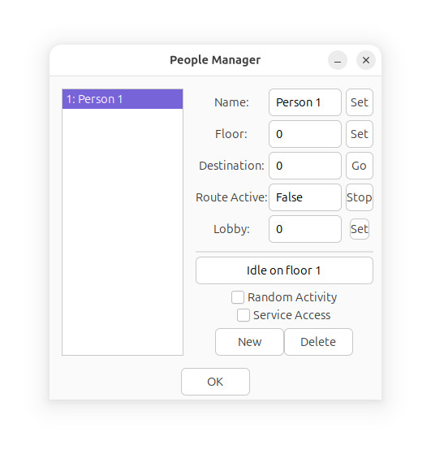

The People Manager window lists all virtual people in the current
simulator instance.

On the left you will see the list of virtual people in the
simulator instance (per-building).
People will be created automatically when turning on Random
Activity in the Control Panel window.
Lobby is the person's starting floor.
Random Activity determines if the person should randomly ride
elevators, and Service Access determines if the person should
have access to service elevators.